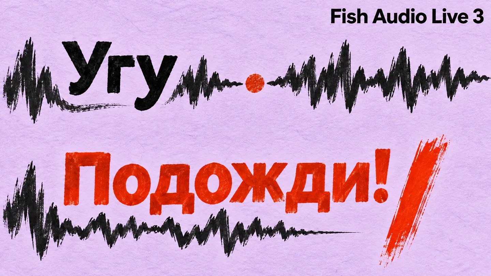

Нейросеть можно перебить посреди фразы. Она услышит вас, даже если сама в этот момент говорит.
Японская компания higurashi открыла голосовую модель Haru-4B, способную одновременно слушать собеседника и отвечать ему. Во время разговора ИИ реагирует на короткие «угу», смех и попытки вмешаться в его речь.
Ждать, пока нейросеть договорит, больше не обязательно.
На официальном сайте разработчики выложили четыре записи диалогов. В одном из них человек обсуждает с Haru фильмы. Собеседники периодически говорят одновременно, а ИИ продолжает следить за разговором.
Модель поддерживает девять языков, включая русский. Ей можно задать характер текстовым описанием и передать образец голоса продолжительностью от трёх секунд.
15 ноября разработчик nyosegawa выпустил speech.cpp 0.11.0 с поддержкой Haru-4B. Теперь модель можно запустить на собственном компьютере с Windows, Linux или macOS.
Для работы не требуются Python и CUDA. Вычисления выполняются на процессоре или поддерживаемой видеокарте, а разговор остаётся на устройстве пользователя.
Полная версия Haru занимает 10,56 ГБ. Разработчик предусмотрел и уменьшенные варианты, хотя сильное сжатие ухудшает качество ответов.
Сама технология одновременного прослушивания и генерации речи развивается сразу у нескольких команд. Ранее Fish Audio научила голосовой ИИ отличать короткое «угу» от попытки перебить.

Haru обрабатывает входящий и исходящий звук каждые 133 миллисекунды. Благодаря этому модель продолжает воспринимать речь человека во время собственного ответа.
Исходные веса опубликованы на Hugging Face по лицензии Apache 2.0.
Разработчики называют Haru исследовательской моделью. Во время разговора она иногда повторяется, внезапно замолкает или переключается на другой язык. Для сложных инструкций и поиска достоверных фактов её пока не рекомендуют.